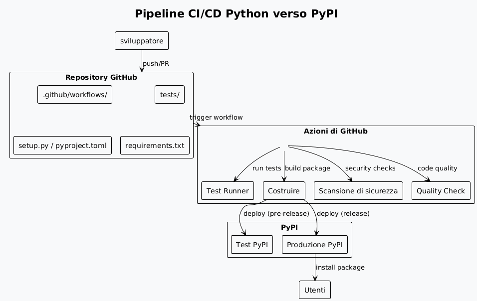
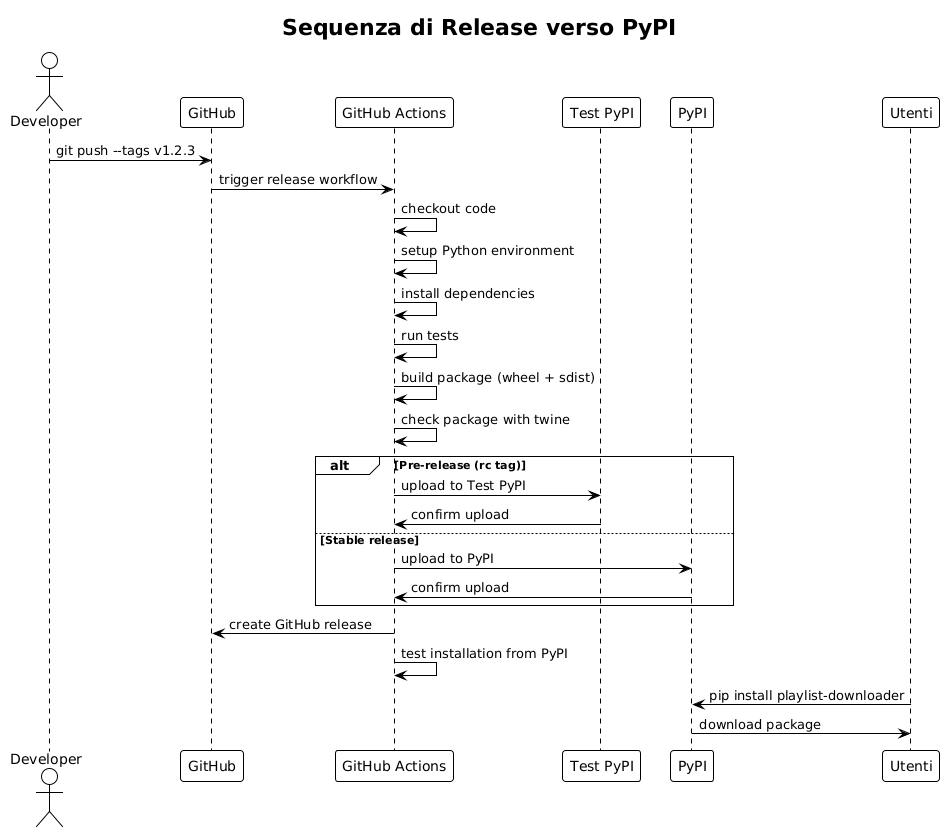
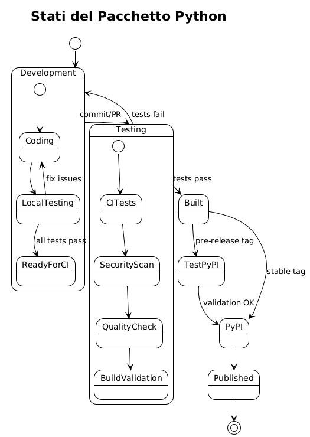
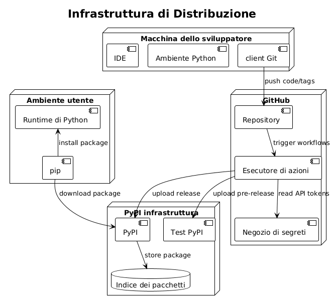
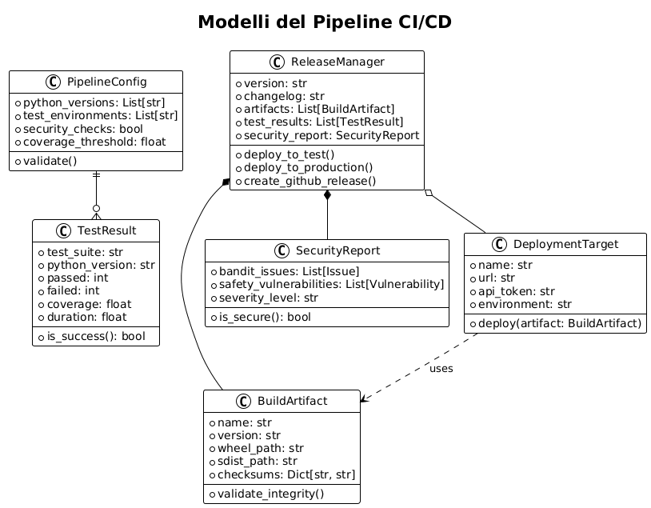

Parte 2 : Industrializzare e proteggere un pipeline CI/CD Python avanzato
Publié le 18 July 2025
- Introduzione
- Architettura del pipeline CI/CD
- Struttura del Progetto
- Configurazione del Package con pyproject.toml
- Workflow di CI/CD - Test e Qualità
- Flusso di lavoro di rilascio e distribuzione
- Diagrammi di architettura
- Oggetti e modelli della pipeline
- Configurazione dei Segreti
- Scripts di sviluppo locale
- Buone Pratiche e Raccomandazioni
- Monitoraggio e Osservabilità
- Conclusione
- risorse complementari
Introduzione
Nella prima parte di questa serie, abbiamo costruito un pipeline CI/CD semplice ma efficace per automatizzare i test e la pubblicazione di un pacchetto Python su PyPI.
Ora è il momento di professionalizzare questo pipeline. In questa seconda parte, faremo :
-
Migrare verso lo standard moderno pyproject.toml,
-
Aggiungere strumenti di qualità e sicurezza (Black, Mypy, Bandit, Safety)
-
Impostare test multi-versione,
-
Integrare una distribuzione progressiva tramite Test PyPI,
-
Automatizzare il versioning e migliorare il monitoraggio del pipeline.
Preparati a passare da una pipeline funzionante a un’infrastruttura CI/CD professionale.
Distribuire un’applicazione Python su PyPI richiede un pipeline CI/CD robusto che automatizza i test, la costruzione e la pubblicazione dei pacchetti. Questo articolo descrive la configurazione di un pipeline completo utilizzando GitHub Actions per un’applicazione CLI Python, basandosi sulle migliori pratiche dell’ecosistema Python moderno.
Architettura del pipeline CI/CD
Il pipeline che costruiremo segue un approccio in più fasi:

Struttura del Progetto
Un’applicazione CLI Python pronta per la distribuzione deve rispettare una struttura standardizzata:
playlist-downloader/
├── .github/
│ └── workflows/
│ ├── ci.yml
│ ├── release.yml
│ └── security.yml
├── src/
│ └── playlist_downloader/
│ ├── __init__.py
│ ├── cli.py
│ ├── core/
│ └── adapters/
├── tests/
│ ├── unit/
│ ├── integration/
│ └── conftest.py
├── docs/
├── pyproject.toml
├── requirements.txt
├── requirements-dev.txt
├── MANIFEST.in
├── README.md
├── LICENSE
└── CHANGELOG.mdConfigurazione del Package con pyproject.toml
Il file`pyproject.toml`è lo standard moderno per configurare i pacchetti Python :
[build-system]
requires = ["setuptools>=45", "wheel", "setuptools_scm>=6.2"]
build-backend = "setuptools.build_meta"
[project]
name = "playlist-downloader"
authors = [
{name = "Christophe Hérolivier", email = "cheroliv@example.com"},
]
description = "CLI tool for YouTube playlist management"
readme = "README.md"
requires-python = ">=3.8"
keywords = ["youtube", "playlist", "cli", "downloader"]
license = {text = "MIT"}
classifiers = [
"Development Status :: 4 - Beta",
"Environment :: Console",
"Intended Audience :: End Users/Desktop",
"License :: OSI Approved :: MIT License",
"Operating System :: OS Independent",
"Programming Language :: Python :: 3",
"Programming Language :: Python :: 3.8",
"Programming Language :: Python :: 3.9",
"Programming Language :: Python :: 3.10",
"Programming Language :: Python :: 3.11",
"Topic :: Multimedia :: Sound/Audio",
"Topic :: Utilities",
]
dependencies = [
"typer>=0.9.0",
"yt-dlp>=2023.7.6",
"google-api-python-client>=2.0.0",
"google-auth-oauthlib>=1.0.0",
"pyyaml>=6.0",
"rich>=13.0.0",
]
dynamic = ["version"]
[project.optional-dependencies]
dev = [
"pytest>=7.0.0",
"pytest-cov>=4.0.0",
"pytest-mock>=3.10.0",
"black>=23.0.0",
"flake8>=6.0.0",
"mypy>=1.0.0",
"pre-commit>=3.0.0",
"tox>=4.0.0",
]
test = [
"pytest>=7.0.0",
"pytest-cov>=4.0.0",
"pytest-mock>=3.10.0",
]
[project.urls]
Homepage = "https://github.com/cheroliv/playlist-downloader"
Documentation = "https://github.com/cheroliv/playlist-downloader#readme"
Repository = "https://github.com/cheroliv/playlist-downloader.git"
"Bug Tracker" = "https://github.com/cheroliv/playlist-downloader/issues"
[project.scripts]
playlist-downloader = "playlist_downloader.cli:main"
[tool.setuptools_scm]
write_to = "src/playlist_downloader/_version.py"
[tool.setuptools.packages.find]
where = ["src"]
[tool.pytest.ini_options]
testpaths = ["tests"]
python_files = ["test_*.py"]
python_classes = ["Test*"]
python_functions = ["test_*"]
addopts = [
"--cov=src/playlist_downloader",
"--cov-report=html",
"--cov-report=term-missing",
"--cov-fail-under=85",
]
[tool.black]
line-length = 88
target-version = ['py38']
include = '\.pyi?$'
extend-exclude = '''
/(
\.eggs
| \.git
| \.hg
| \.mypy_cache
| \.tox
| \.venv
| _build
| buck-out
| build
| dist
)/
'''
[tool.mypy]
python_version = "3.8"
warn_return_any = true
warn_unused_configs = true
disallow_untyped_defs = true
disallow_incomplete_defs = true
check_untyped_defs = true
disallow_untyped_decorators = true
no_implicit_optional = true
warn_redundant_casts = true
warn_unused_ignores = true
warn_no_return = true
warn_unreachable = true
strict_equality = true
[[tool.mypy.overrides]]
module = [
"yt_dlp.*",
"googleapiclient.*",
"google_auth_oauthlib.*",
]
ignore_missing_imports = trueWorkflow di CI/CD - Test e Qualità
Il flusso di lavoro principale (ci.yml) esegue i test su più versioni di Python:
name: CI
on:
push:
branches: [ main, develop ]
pull_request:
branches: [ main ]
jobs:
test:
runs-on: ubuntu-latest
strategy:
matrix:
python-version: ["3.8", "3.9", "3.10", "3.11"]
steps:
- uses: actions/checkout@v4
with:
fetch-depth: 0
- name: Set up Python ${{ matrix.python-version }}
uses: actions/setup-python@v4
with:
python-version: ${{ matrix.python-version }}
- name: Cache dependencies
uses: actions/cache@v3
with:
path: |
~/.cache/pip
~/.cache/pre-commit
key: ${{ runner.os }}-pip-${{ hashFiles('**/requirements*.txt') }}
restore-keys: |
${{ runner.os }}-pip-
- name: Install dependencies
run: |
python -m pip install --upgrade pip
pip install -e ".[dev]"
- name: Lint with flake8
run: |
flake8 src tests --count --select=E9,F63,F7,F82 --show-source --statistics
flake8 src tests --count --exit-zero --max-complexity=10 --max-line-length=88 --statistics
- name: Check code formatting with Black
run: black --check src tests
- name: Type checking with mypy
run: mypy src
- name: Run tests with pytest
run: |
pytest tests/ -v --cov=src/playlist_downloader \
--cov-report=xml --cov-report=term-missing
- name: Upload coverage to Codecov
uses: codecov/codecov-action@v3
if: matrix.python-version == '3.11'
with:
file: ./coverage.xml
flags: unittests
name: codecov-umbrella
security:
runs-on: ubuntu-latest
steps:
- uses: actions/checkout@v4
- name: Set up Python
uses: actions/setup-python@v4
with:
python-version: "3.11"
- name: Install dependencies
run: |
python -m pip install --upgrade pip
pip install bandit[toml] safety
- name: Run security checks with bandit
run: bandit -r src/ -f json -o bandit-report.json
- name: Check dependencies with safety
run: safety check --json --output safety-report.json
- name: Upload security reports
uses: actions/upload-artifact@v3
if: always()
with:
name: security-reports
path: |
bandit-report.json
safety-report.json
build:
needs: [test, security]
runs-on: ubuntu-latest
steps:
- uses: actions/checkout@v4
with:
fetch-depth: 0
- name: Set up Python
uses: actions/setup-python@v4
with:
python-version: "3.11"
- name: Install build dependencies
run: |
python -m pip install --upgrade pip
pip install build twine
- name: Build package
run: python -m build
- name: Check package with twine
run: twine check dist/*
- name: Upload build artifacts
uses: actions/upload-artifact@v3
with:
name: dist
path: dist/Flusso di lavoro di rilascio e distribuzione
Il workflow di rilascio (release.yml) gestisce la pubblicazione automatica su PyPI :
name: Release
on:
push:
tags:
- 'v*.*.*'
workflow_dispatch:
inputs:
environment:
description: 'Deployment environment'
required: true
default: 'test'
type: choice
options:
- test
- production
env:
PYTHON_VERSION: "3.11"
jobs:
release:
runs-on: ubuntu-latest
environment:
name: ${{ github.event.inputs.environment || (startsWith(github.ref, 'refs/tags/') && 'production' || 'test') }}
steps:
- uses: actions/checkout@v4
with:
fetch-depth: 0
- name: Set up Python
uses: actions/setup-python@v4
with:
python-version: ${{ env.PYTHON_VERSION }}
- name: Install dependencies
run: |
python -m pip install --upgrade pip
pip install build twine
- name: Build package
run: python -m build
- name: Check package
run: twine check dist/*
- name: Publish to Test PyPI
if: github.event.inputs.environment == 'test' || (startsWith(github.ref, 'refs/tags/') && contains(github.ref, 'rc'))
env:
TWINE_USERNAME: __token__
TWINE_PASSWORD: ${{ secrets.TEST_PYPI_API_TOKEN }}
run: |
twine upload --repository testpypi dist/*
- name: Publish to PyPI
if: github.event.inputs.environment == 'production' || (startsWith(github.ref, 'refs/tags/') && !contains(github.ref, 'rc'))
env:
TWINE_USERNAME: __token__
TWINE_PASSWORD: ${{ secrets.PYPI_API_TOKEN }}
run: |
twine upload dist/*
- name: Create GitHub Release
if: startsWith(github.ref, 'refs/tags/')
uses: actions/create-release@v1
env:
GITHUB_TOKEN: ${{ secrets.GITHUB_TOKEN }}
with:
tag_name: ${{ github.ref }}
release_name: Release ${{ github.ref }}
draft: false
prerelease: ${{ contains(github.ref, 'rc') }}
post-release:
needs: release
runs-on: ubuntu-latest
if: startsWith(github.ref, 'refs/tags/')
steps:
- uses: actions/checkout@v4
- name: Set up Python
uses: actions/setup-python@v4
with:
python-version: ${{ env.PYTHON_VERSION }}
- name: Test installation from PyPI
run: |
sleep 60 # Attendre la propagation sur PyPI
pip install playlist-downloader
playlist-downloader --version
- name: Update documentation
run: |
# Script pour mettre à jour la documentation
echo "Documentation updated for version ${GITHUB_REF#refs/tags/}"Diagrammi di architettura
Diagramma di sequenza - processo di rilascio

Diagramma degli Stati - Ciclo di Vita del Pacchetto

Diagramma di Distribuzione - Infrastruttura CI/CD

Oggetti e modelli della pipeline
Diagramma delle classi - Modelli CI/CD

Configurazione dei Segreti
Perché il pipeline funzioni, dovete configurare i seguenti segreti in GitHub :
Segreti GitHub Actions
# Dans Settings > Secrets and variables > Actions
# Token PyPI pour la production
PYPI_API_TOKEN=pypi-...
# Token Test PyPI pour les pré-releases
TEST_PYPI_API_TOKEN=pypi-...
# Token GitHub pour créer les releases
GITHUB_TOKEN=(automatiquement fourni)
# Token Codecov (optionnel)
CODECOV_TOKEN=...Generazione dei token PyPI
# 1. Créer un compte sur PyPI et Test PyPI
# 2. Aller dans Account Settings > API tokens
# 3. Créer un token avec scope "Entire account" ou spécifique au projet
# 4. Format du token : pypi-AgEIcHlwaS5vcmc...Scripts di sviluppo locale
Per facilitare lo sviluppo, crea script utilitari :
Makefile
.PHONY: install test lint format security build clean release-test release-prod
install:
pip install -e ".[dev]"
test:
pytest tests/ -v --cov=src/playlist_downloader
lint:
flake8 src tests
mypy src
format:
black src tests
security:
bandit -r src/
safety check
build:
python -m build
twine check dist/*
clean:
rm -rf build/ dist/ *.egg-info/
find . -type d -name __pycache__ -delete
find . -name "*.pyc" -delete
release-test: clean build
twine upload --repository testpypi dist/*
release-prod: clean build
twine upload dist/*
pre-commit: format lint test security
@echo "✅ Prêt pour commit"Script di versione
#!/usr/bin/env python3
"""Script pour gérer les versions du projet."""
import sys
import subprocess
from pathlib import Path
def get_current_version():
"""Récupère la version actuelle depuis git."""
try:
result = subprocess.run(
["git", "describe", "--tags", "--abbrev=0"],
capture_output=True,
text=True,
check=True
)
return result.stdout.strip()
except subprocess.CalledProcessError:
return "0.0.0"
def create_version_tag(version, message=None):
"""Crée un tag de version."""
if not version.startswith('v'):
version = f'v{version}'
tag_message = message or f"Release {version}"
subprocess.run(["git", "tag", "-a", version, "-m", tag_message], check=True)
print(f"✅ Tag {version} créé")
# Push le tag
subprocess.run(["git", "push", "origin", version], check=True)
print(f"✅ Tag {version} poussé vers origin")
if __name__ == "__main__":
if len(sys.argv) < 2:
current = get_current_version()
print(f"Version actuelle: {current}")
print("Usage: python version.py <new_version> [message]")
sys.exit(1)
new_version = sys.argv[1]
message = sys.argv[2] if len(sys.argv) > 2 else None
create_version_tag(new_version, message)Buone Pratiche e Raccomandazioni
Versionamento semantico
Utilizzare il versionamento semantico (SemVer) :
-
MAJOR.MINOR.PATCH(ex: 1.2.3) -
MAJOR: modifiche incompatibili -
MINOR: nuove funzionalità compatibili -
`PATCH`correzioni di bug compatibili
Strategia di ramificazione
main ──●──●──●──●──●────●── (releases stables)
/ / /
develop ──●──●──●──●──●──●──●──●── (développement)
/ / /
feature/xxx ●──●──●──●──●──/ (fonctionnalités)Test e Copertura
-
Copertura minima del codice: 85%
-
test unitari per la logica di business
-
Test di integrazione per gli adattatori
-
Test end-to-end per le CLI
Sicurezza
-
Scansione automatica delle dipendenze (Safety)
-
Analisi statica del codice (Bandit)
-
Segreti mai nel codice
-
Utilizzo di token PyPI specifici
Monitoraggio e Osservabilità
Metriche di Pipeline
# .github/workflows/metrics.yml
name: Pipeline Metrics
on:
workflow_run:
workflows: ["CI", "Release"]
types: [completed]
jobs:
metrics:
runs-on: ubuntu-latest
steps:
- name: Collect metrics
run: |
echo "Pipeline: ${{ github.event.workflow_run.name }}"
echo "Status: ${{ github.event.workflow_run.conclusion }}"
echo "Duration: ${{ github.event.workflow_run.updated_at - github.event.workflow_run.created_at }}"
# Envoyer vers système de monitoringNotifiche
# Ajout dans les workflows pour notifications
- name: Notify on failure
if: failure()
uses: 8398a7/action-slack@v3
with:
status: failure
text: "❌ Pipeline failed for ${{ github.repository }}"
env:
SLACK_WEBHOOK_URL: ${{ secrets.SLACK_WEBHOOK }}Conclusione
Questa pipeline CI/CD completa per Python offre:
-
Automazione completa: dalla validazione del codice alla pubblicazione
-
Sicurezzascansioni automatiche e gestione sicura dei segreti
-
Qualità: test multi-version, linting e copertura del codice
-
Affidabilità: distribuzione graduale tramite Test PyPI
-
Tracciabilitàartefatti, rapporti e releases GitHub
L’adozione di queste pratiche garantisce un processo di consegna robusto e professionale per le tue applicazioni CLI Python, facilitando la manutenzione e l’evoluzione dei tuoi progetti nel lungo termine.
Articoli correlati
14 May 2026